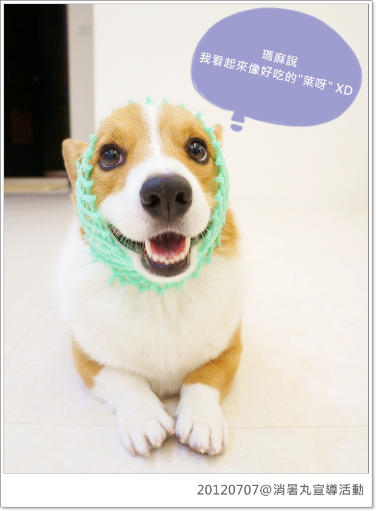
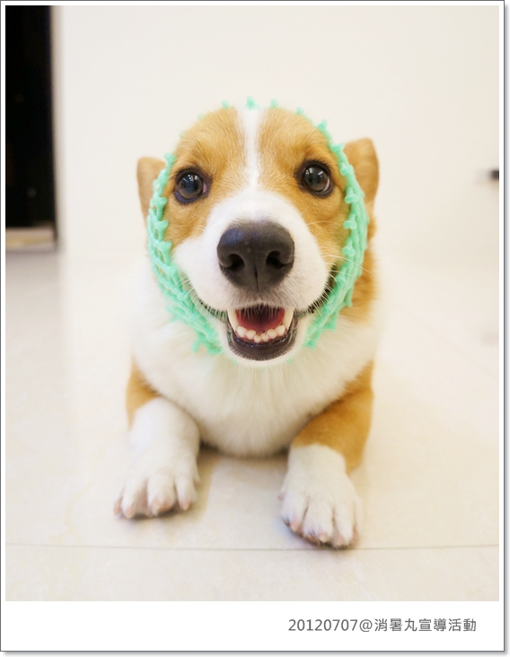
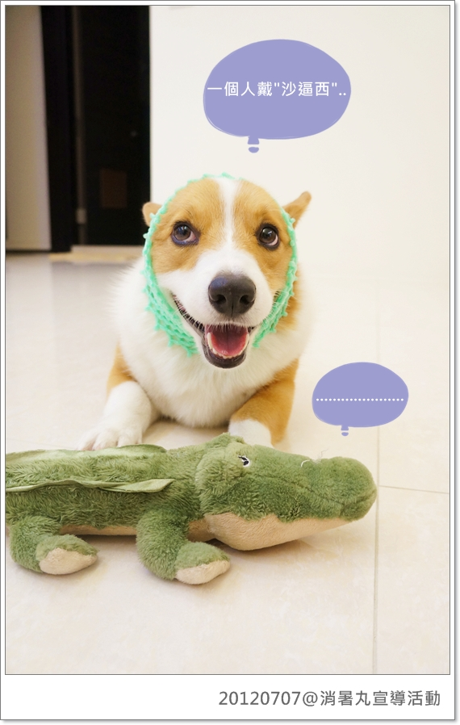
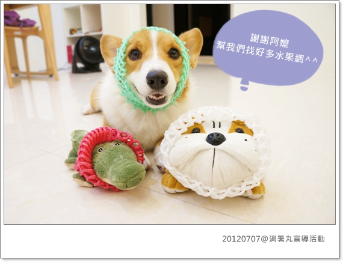
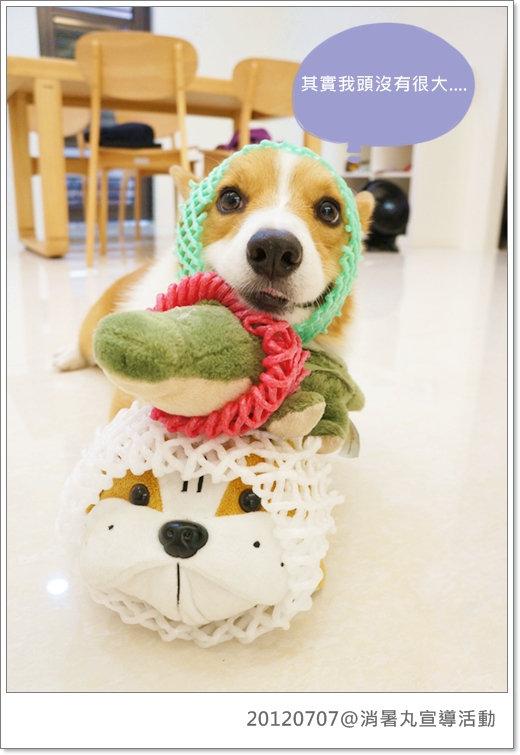
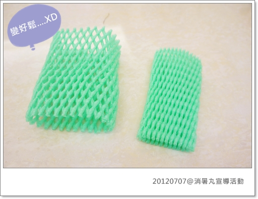
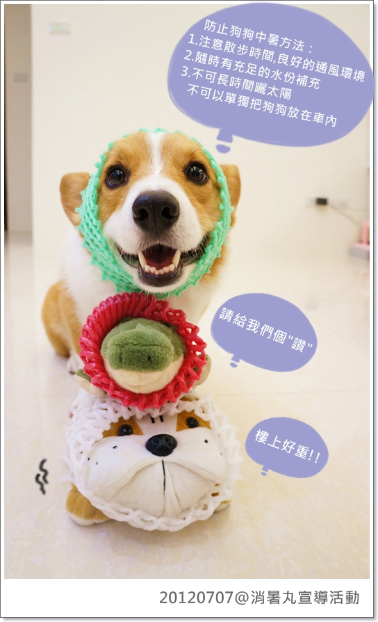

地球壞了！我真的覺得夏天一年真的比一年熱呀！
最近花花麻的寵物雜貨舖舉辦【消暑丸宣導活動】，目的就是要宣導請大家重視狗狗夏日中暑的嚴重性！
活動起跑一週啦！但因為找不到適合(?)的水果網所以卡卡遲到啦！XD
這水果網戴起來好好笑！花花麻太有創意惹！！
柯基的毛色讓卡卡看起來好像"萊呀" (水棃)

可能平常被我惡搞習慣了，
這小子完全沒有臭臉排斥，戴上去反而咖心的咧！莫名其妙～哈哈哈

這嘛好的活動怎嘛可以只有卡卡一個人參加咧!?

登楞！！阿怪跟鱷魚先生也一起加入啦！
因為猛阿嬤怕卡卡"頭大太"會把網子撐破，所以每個顏色都各拿了2個備用.......XDDDDDDD

因為老木我平常沒有在買水果的習慣......
只好拜託阿嬤幫忙，結果阿嬤又找了鄰居阿姨幫忙，一聽到參加活動，整條街總動員(?) 笑屎我！
彩色水果網是有沒有這嘛難找啊！？哈哈哈哈哈

其實我們頭沒有很大啦！

頂多拿下來變得很鬆而已...................

這是卡卡參加活動的宣傳照：丸子三兄弟(?)
小眼睛粉絲們集合啦！請大家點選下面這個連結幫卡卡按個讚吧！
(一定要點這個照片連結 按的讚才算數哦！)
https://www.facebook.com/photo.php?
fbid=3498083128187&set=oa.357261017676462&type=1&theater
卡卡：好熱！我想要涼涼衣！！！些些大家
瑪麻：沒有中獎瑪麻也會掏腰包買啦！只不過能省則省嘛~XD

====================================================
最重要的還是希望大家能重視狗狗中暑的問題啦！
最近FB有張小法鬥熱衰竭去當小天使的照片，看了真的難過！
其實只要主人多加注意，這些都是可以避免的！
防止狗狗中暑方法：
1.注意散步時間,良好的通風環境
柏油路其實溫度很高，請避免在太陽毒辣的時段溜狗，狗狗的腳跟你一樣會燙傷的！
2.隨時有充足的水份補充
尤其是去海邊玩水的狗狗請一定要隨時補充水份，游一下就要讓寶貝適時休息
也要注意沙灘的溫度，會燙腳就請把他抱起來！
3.不可長時間曬太陽.不可以單獨把狗狗放在車內
這種天氣會把小狗跟小蛤單獨留在車內的父母，你可以去屎惹你！！
更多有關中暑的資訊，可以點選連結看文章--> 愛犬的夏日健康守則
希望大家的狗寶貝都可以健康安全的過完討厭的夏天！！